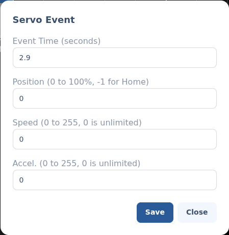

Servo events.
A servo event moves a servo to a position at a point on the timeline. Add servo events to a Servo channel to animate panels, periscopes, arms and the like.
§Add a servo event
Add a Servo channel to your script (see Scripting animations), then click its track at the time you want the move to happen. The servo event editor opens.
§The editor

- Event Time (seconds) — where on the timeline the move happens.
- Position — the target,
0–100%of the servo's travel. Use-1to send it to its Home position. - Speed — how fast it travels,
0–255.0is unlimited (as fast as the servo can go). - Accel. — how hard it ramps up to speed,
0–255.0is unlimited.
Speed and Accel. are the
Pololu Maestro's own units
(0–255), passed straight through. Position is a
percentage of the travel you set on the servo's Maestro channel in
Modules — its Min µs,
Max µs and Home µs, where you dial in how far the
servo should move on the droid. On the Pololu itself (in Maestro Control Center), set
that channel's min and max to the servo's rated full range — not the
droid limits; AstrOs keeps those in the module config and drives the servo between them.
Scripts command servos in percent rather than raw microseconds for two reasons. First, it keeps your scripts portable: if you swap in a different servo whose ends need different Min µs / Max µs values, you update those two fields on the servo's Maestro channel once — every script that drives the channel keeps working, with nothing to re-edit. Second, a percentage is far easier to picture — 0% is one end, 50% the middle, 100% the other — than reasoning about raw pulse widths.
Back to Scripting animations.